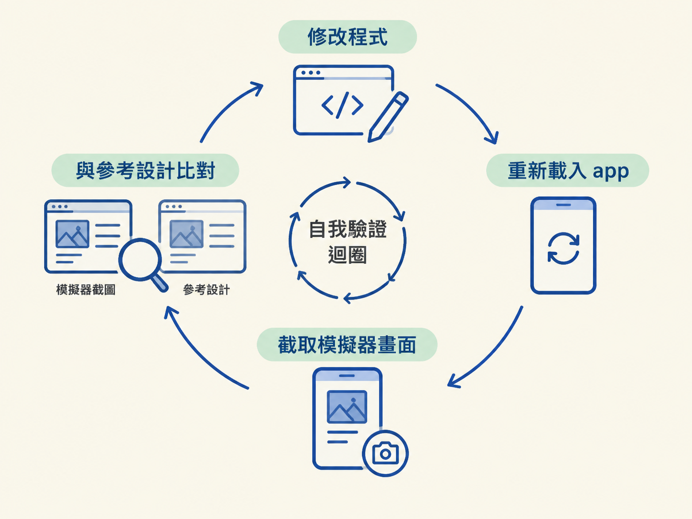
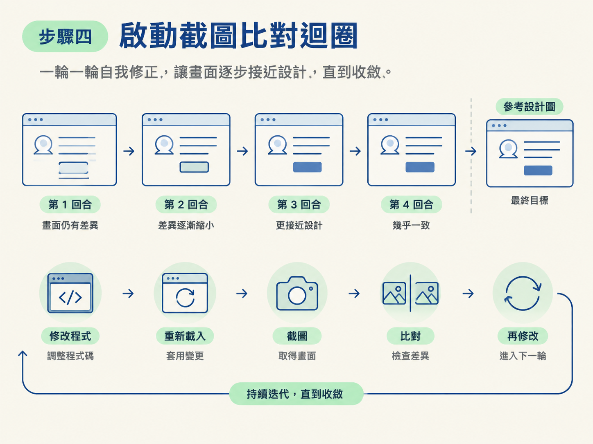
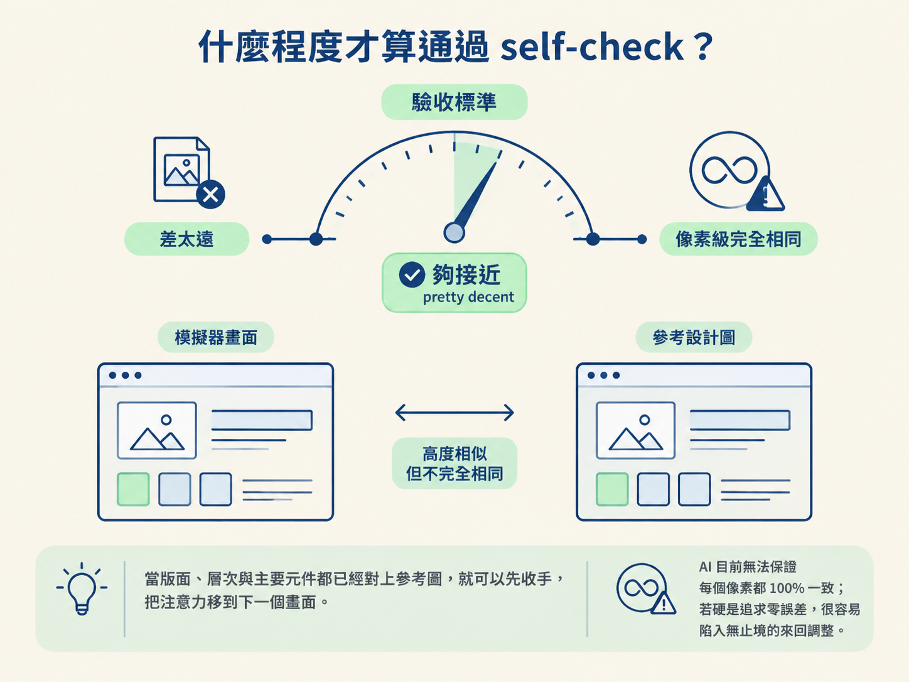

你會跑起一條完整的 self-check 迴圈：啟動 app、截取模擬器畫面、跟參考設計比對，再根據落差修正，直到畫面的版面、層次、主要元件都接近設計。
整體流程可以想成一個反覆校正的方向盤：先讓 app 跑起來，再讓 agent 實作單一畫面；接著由 agent 自己截圖、自己比對、自己修正。你只需要觀察結果，並在必要時一次指出一個落差。
這條迴圈不是空手就能跑。開始前，請確認以下條件都已經準備好：
design/ 資料夾裡。第三項的權限特別容易讓流程卡住。預設是，agent 每修改一個檔案都要你按確認，整個迴圈會變得很慢。這裡可以開啟 bypass permissions（也稱為 auto mode），讓 agent 自己修改、執行、截圖，連續完成多輪修正。
不過這是一把雙面刃：開啟後，agent 理論上也可能刪除檔案而不再詢問。因此開始前，請先確認專案已經 commit，並且有可以回復的版本。
上一節用 AGENTS.md 交代了專案規則，agent 也知道不能使用自刻的 tab bar。但規則檔只能告訴它「應該怎麼做」，不能證明最後畫面「看起來對不對」。按鈕可能偏了一點，字重可能太粗，留白也可能不符合設計；這些差異，必須把實際畫面和參考圖放在一起看才容易發現。
這一節的核心手法就是截圖比對迴圈。每次 agent 修改完畫面，就截一張模擬器畫面，拿去和參考設計比對。如果還有差異，就繼續修改、重新載入、再次截圖，直到畫面收斂。

關鍵指令可以直接用白話說：
你做一次，就截圖模擬器，跟這張參考設計比對；不一致就繼續改，直到一樣為止。
接下來按照順序執行。每一步都會說明你應該看到什麼結果。
先在專案目錄執行 npx expo start。接著在終端機按 i 開啟 iOS 模擬器，或按 a 開啟 Android 模擬器。
npx expo start
# 按 i 開 iOS 模擬器，或按 a 開 Android預期結果是：模擬器出現你的 app 畫面，而且 app 可以正常載入。若這一步還沒成功，先不要進入截圖比對，否則後面的問題會混在一起，很難判斷。
將設計稿存進 design/ 資料夾，例如：
design/UI reference design.png
下指令時，請直接說明要比對哪一張圖；你也可以把圖片附在對話裡。預期結果是：agent 的回覆會提到它正在拿這張參考設計比對。
參考圖如果不清楚，後面所有比對都會像拿歪掉的尺量東西一樣，結果自然不可靠。因此這一步要確認檔案正確、畫面清楚，而且 agent 確實知道要使用哪一張圖。
接著給 agent 一個範圍明確的指令，例如：
照這張設計圖實作登入畫面，先只做 UI，不要接真資料。
預期結果是：agent 建立或修改與這個畫面對應的檔案，並在幾分鐘後回報完成。
範圍越小，agent 越容易做對。若一次把十個畫面都交給它，問題會同時出現在很多地方，失敗率也會明顯上升。
畫面初版完成後，補上核心指令：
請截圖目前的模擬器畫面，和參考圖比對；不一致的地方就繼續修改，直到畫面一致。
預期結果是：agent 開始一輪一輪地自我修正，流程大致會是「修改程式、重新載入、截圖、比對，再修改」。通常五到十分鐘，就能讓畫面收斂到接近設計。

這裡的目標不是保證 100% 像素相同。agent 不需要為了極小的差異無止境地來回調整，先把主要畫面做對比較重要。
如果比對後還有差異，請一次只指出一個問題，讓 agent 能精準處理。例如：
預期結果是：agent 針對單一問題修改，而不是同時動到整個畫面。一次列出十個問題，agent 可能只修到其中幾個，甚至不小心改壞原本已經正確的地方。
好做法：「目前畫面跟設計差不多，但灰色背景要拿掉，讓底下的內容透出來。」
壞做法：「背景、間距、字型、圖示、按鈕顏色，還有那個卡片都不太對，全部修一修。」
如果這一輪安裝了任何原生模組，例如相機、Sentry 或 video 通話的 SDK，光靠熱重載並不夠。
判斷方式很簡單：若這一輪有動到 native 依賴，就先停止目前的伺服器，改用原生建置：
npx expo run ios
# Android 用 npx expo run android預期結果是：Expo 重新編譯原生專案。第一次建置通常會比較慢，之後會快得多。
如果跳過這一步，你可能會以為新模組「沒有生效」，但實際上只是它還沒有被編進原生專案。
這條迴圈需要一個明確的停損點。標準是 pretty decent，也就是畫面夠接近，而不是像素級完全相同。
版面、層次、主要元件都對上參考圖之後，就可以先收手，把注意力移到下一個畫面。AI 目前無法保證每個像素都 100% 一致；若硬是追求零誤差，很容易陷入無止境的來回調整。

驗收時也不要只聽 agent 說「做好了」。畫面要用眼睛確認或用截圖比對，行為則要用手動測試。例如登入後登出，再重新登入一次；或者到資料庫確認確實多了一筆紀錄。
截圖比對和實際操作這兩種證據合起來，才足以說一個功能通過 self-check。至於為什麼修改後要重新載入、為什麼 native module 必須重新建置，這裡先不展開原理；需要時再回頭查 Expo 的文件即可。
做完這套流程後，你應該能讓 agent：
npx expo start 啟動 app 與模擬器。design/ 裡指定的參考圖。npx expo run ios 或 Android 對應指令重新建置。self-check 的核心是截圖比對迴圈：把 app 跑起來，用npx expo start開模擬器；把參考圖放進design/並在指令裡指名；叫 agent「只做這個畫面」；再要它截圖、比對、重做到一致。回饋時一次只講一個問題，新增 native module 一定得用npx expo run ios重建。收斂標準是「夠接近」，不是像素級相同。
到這裡，你已經能讓 agent 把畫面做到位，也能用 AGENTS.md 管住它的行為。但每次遇到新工具，它仍可能拿舊知識亂寫。下一節會處理另一個問題：如何用 skill、官方文件、Context7 主動把正確而且最新的 context 餵給 agent。